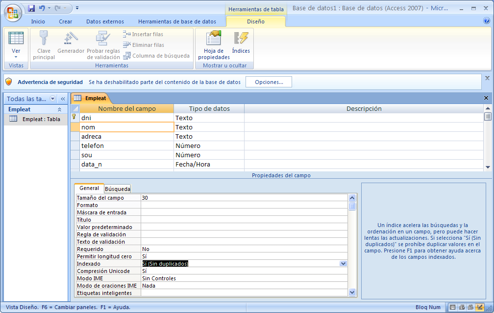
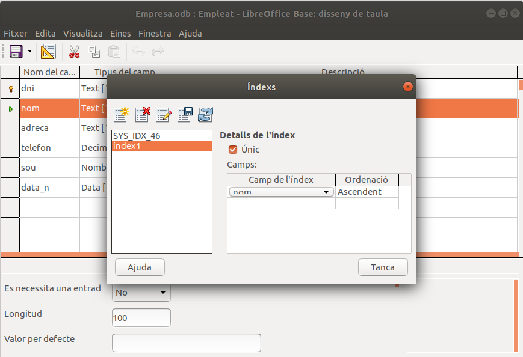

3.2.3 Restricció d'unicitat
Si en un camp, o en un conjunt de camps, definim la restricció d'unicitat (UNIQUE), això obliga a que, en cas de tenir valors el camp, no es puguen repetir. Suposem, per exemple, els alumnes d'un Institut. La clau no pot ser el DNI, ja que alguns alumnes no en tindran, però en cas de tenir-ne, és clar que no es podrà repetir.
Representarem que un camp és únic, posant únic entre parèntesi baix del camp. Per exemple, si considerem que el camp nom de la taula EMPLEAT ha de ser únic, ho representarem així:
(únic)
En Access la restricció d'unicitat (UNIQUE) es defineix posant en l'apartat Indexado el valor Sí (sin duplicados). En la figura es mostra com fer que el camp nom de la taula EMPLEAT siga únic.

En Base de LibreOffice es fa creant un índex, en el símbol
Haurem crear un nou índex, el camp pel qual volem l'índex, l'ordre que ens interessa (normalment ascendent) i deixar activa la casella Únic

En aquesta imatge es veu com pel fet d'haver creat la clau principal, ja s'havia creat un índex, en la imatge SYS_IDX_46. No es tracta de modificar aquest, sinó crear-ne un nou.
Llicenciat sota la Llicència Creative Commons Reconeixement NoComercial CompartirIgual 3.0